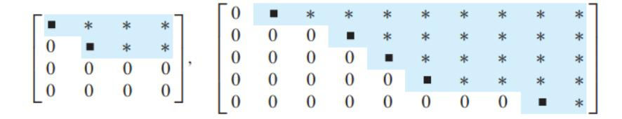
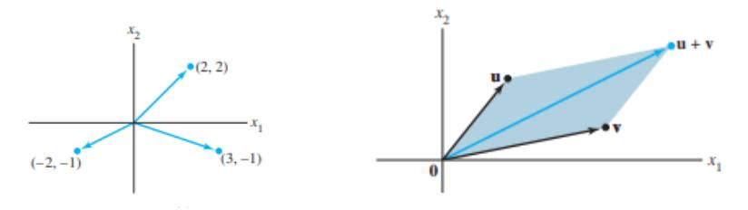
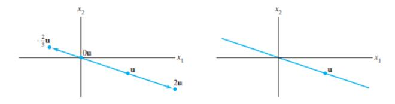
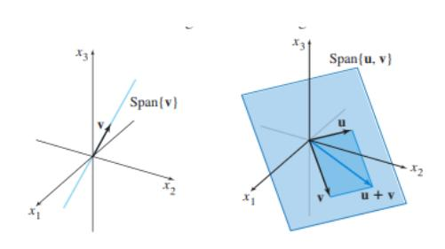
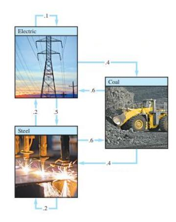
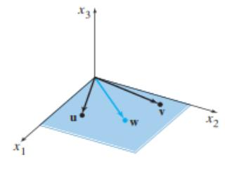
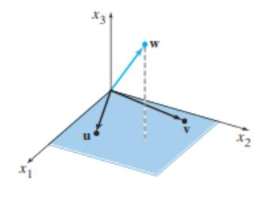
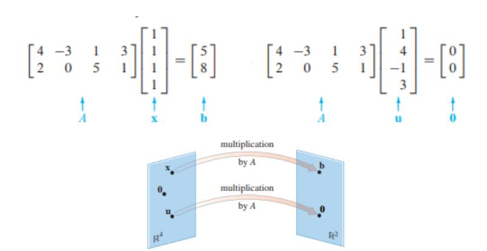
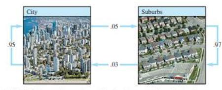

📝 Систем линеарни равенки
Овој документ ги објаснува основните концепти на линеарни равенки, системи од линеарни равенки, нивното претставување со матрици, методи за решавање, и поврзани концепти како вектори, линеарни комбинации, линеарна зависност и трансформации.
💡 Линеарна равенка
Линеарна равенка со $ n $ непознати е равенка од облик:
каде $ b \in \Re $ е изразен преку константи $ a_i \in \Re $ и непознати $ x_i \in \Re $.
Едно решение на линеарната равенка е низа од $ n $ броеви $ (s_1, s_2, \ldots, s_n) $ така што равенката е исполнета кога $ x_1 = s_1, x_2 = s_2, \ldots, x_n = s_n $.
Пример: За равенката $ 2x_1 + x_2 - 3x_3 = 1 $, решение е $ x_1 = 1, x_2 = 2, x_3 = 1 $, бидејќи $ 2(1) + 1(2) - 3(1) = 1 $.
📊 Систем линеарни равенки
Систем од $ m $ линеарни равенки со $ n $ непознати $ x_1, x_2, \ldots, x_n $ е множество од $ m $ линеарни равенки:
Едно решение на системот е низа од $ n $ броеви $ s_1, s_2, \ldots, s_n $ која е решение на секоја од $ m $ равенки.
Множество решенија на системот е множеството од сите $ n $-торки $ (s_1, s_2, \ldots, s_n) $ кои се едно решение на секоја од $ m $ равенки. Ова множество може да биде и празно.
⚖️ Можни исходи за систем од линеарни равенки
Систем од линеарни равенки може:
Да нема решение.
Да има единствено решение.
Да има бесконечно многу решенија.
Ако системот има решение, тој е конзистентен.
Ако системот нема решение, тој е противречен.
🔢 Системи линеарни равенки претставени со матрици
Системот од линеарни равенки може да се претстави во матрична форма.
📝 Матрица од коефициенти
Матрицата од коефициенти $ A $ ги содржи сите константи $ a_{ij} $:
➡️ Матрица (вектор) од резултати
Векторот $ b $ ги содржи слободните членови:
➕ Проширена матрица
Со додавање на колоната со слободни членови $ b $ како $ (n+1) $-ва колона до матрицата на коефициенти $ A $, се добива проширена матрица на системот:
🛠️ Решавање на систем линеарни равенки
За решавање на систем, на пример:
↔️ Еквивалентни системи
Два системи линеарни равенки се еквивалентни ако решенијата на првиот систем се решенија и на вториот систем и обратно. Следниве трансформации на систем од линеарни равенки даваат еквивалентен систем:
Замена на местата на две равенки.
Множење на една равенка со ненулти број.
Множење на една равенка со ненулти број и додавање на друга равенка.
Овие операции се применуваат на проширената матрица за да се реши системот. Пример за решавање:
Од оваа ешалонска форма, со наназад супституција се добива:
❓ Две фундаментални прашања за линеарен систем
Дали системот е конзистентен (т.е. дали постои барем едно решение)?
Ако постои решение, дали е единствено?
📈 Редукција на редици - Ешалонска форма
Правоаголна матрица е во ешалонска форма (или форма на ешалонски ред) ако ги има следниве три својства:
Сите ненулти редици се над сите редици во кои сите се нули.
Секој водечки елемент (прв ненулти елемент) во редицата е во колона десно од водечкиот елемент на редицата над него.
Сите елементи во колоната под водечкиот елемент се нули.
Ако матрицата во ешалонска форма ги исполнува следниве дополнителни услови, тогаш тоа е во редуцирана ешалонска форма: 4. Водечкиот елемент во секоја ненулта редица е 1. 5. Секоја водечка 1-ца е единствениот ненулти запис во неговата колона.
🎯 Пивот
Пивот позиција во матрицата $ A $ е локацијата во $ A $ што одговара на водечката 1-ца во редуцираната ешалонска форма.
Пивот колона е колоната од $ A $ што ја содржи пивот позицијата.
⚙️ Алгоритам за редуцирање на редици (Гаусова елиминација)
Започни со најлевата ненулта колона. Тоа е пивот колоната. Пивотот е на горната позиција.
Ако на таа позиција има 0, селектирај редица која не започнува со 0 и направи замена на редици.
Направи замена на редици така што сите редици кои почнуваат со 0 се под редиците кои не започнуваат со 0.
Со Гаусова трансформација (множење на првата редица со број и додавање на наредните редици) трансформирај ги сите елементи под пивотот во 0.
Повторувај ги чекорите на подматриците кои остануваат, додека не останат редици кои треба да се заменат.
➕ Гаусов метод за решавање на систем равенки
Доведување на проширената матрица до ешалонска форма.
Наназад супституција.
Егзистенција на решение: Системот има решение ако нема редица во која сите елементи од матрицата од коефициенти се 0, а во матрицата од резултати во соодветната редица нема 0.
Егзистенција на единствено решение: Кога има решение и бројот на пивот позиции (водечки елементи) е еднаков на бројот на променливи.
📏 Вектори и линеарни комбинации
➡️ Вектори во $ \mathbf{R}^2 $
Матрица со само една колона се нарекува вектор на колона, или едноставно вектор.
Пример: $ \mathbf{a} = \begin{bmatrix} 2\\ 5 \end{bmatrix} $
Два вектори се еднакви ако соодветните членови им се еднакви.
➕ Собирање и множење со скалар
Собирање: Собирање на соодветните координати.
Пример: $ \mathbf{a} = \begin{bmatrix} 2 \\ 5 \end{bmatrix} $, $ \mathbf{b} = \begin{bmatrix} -2 \\ 3 \end{bmatrix} $, тогаш $ \mathbf{a} + \mathbf{b} = \begin{bmatrix} 2+(-2) \\ 5+3 \end{bmatrix} = \begin{bmatrix} 0 \\ 8 \end{bmatrix} $.
Множење со скалар: Множење на секоја од координатите со скаларот.
Пример: $ \mathbf{a} = \begin{bmatrix} 2 \\ 5 \end{bmatrix} $, $ c=3 $, тогаш $ 3\mathbf{a} = \begin{bmatrix} 3 \cdot 2 \\ 3 \cdot 5 \end{bmatrix} = \begin{bmatrix} 6 \\ 15 \end{bmatrix} $.
Комбиниран пример: $ 3\mathbf{a} + 4\mathbf{b} = 3\begin{bmatrix} 2 \\ 5 \end{bmatrix} + 4\begin{bmatrix} -2 \\ 3 \end{bmatrix} = \begin{bmatrix} 6 \\ 15 \end{bmatrix} + \begin{bmatrix} -8 \\ 12 \end{bmatrix} = \begin{bmatrix} -2 \\ 27 \end{bmatrix} $.
🗺️ Собирање и множење во $ \mathbf{R}^2 $ - геометриска интерпретација
Собирањето на вектори може да се визуелизира со правилото на паралелограм.
Множењето со скалар го менува должината на векторот и може да ја промени насоката ако скаларот е негативен.
🌐 Вектори во $ \mathbf{R}^n $
$ n $-торка од броеви, најчесто претставена како колона:
$$ \begin{bmatrix} a_1\\a_2\\ \vdots\\a_n \end{bmatrix} $$Собирањето и множењето со скалар се дефинираат аналогно како во $ \mathbf{R}^2 $.
📜 Својства на собирање на вектори
Нека $ \mathbf{u}, \mathbf{v} $ и $ \mathbf{w} $ се вектори од $ \mathbf{R}^n $, а $ c $ и $ d $ се скалари. Тогаш:
(i) $ \mathbf{u} + \mathbf{v} = \mathbf{v} + \mathbf{u} $ (комутативност)
(ii) $ (\mathbf{u} + \mathbf{v}) + \mathbf{w} = \mathbf{u} + (\mathbf{v} + \mathbf{w}) $ (асоцијативност)
(iii) $ \mathbf{u} + \mathbf{0} = \mathbf{0} + \mathbf{u} = \mathbf{u} $ (неутрален елемент)
(iv) $ \mathbf{u} + (-\mathbf{u}) = -\mathbf{u} + \mathbf{u} = \mathbf{0} $ (инверзен елемент, каде $ -\mathbf{u} $ означува $ (-1)\mathbf{u} $)
(v) $ c(\mathbf{u} + \mathbf{v}) = c\mathbf{u} + c\mathbf{v} $ (дистрибутивност на скалар)
(vi) $ (c + d)\mathbf{u} = c\mathbf{u} + d\mathbf{u} $ (дистрибутивност на вектор)
(vii) $ c(d\mathbf{u}) = (cd)\mathbf{u} $ (асоцијативност на множење со скалар)
(viii) $ 1\mathbf{u} = \mathbf{u} $ (идентитет за множење со скалар)
🧩 Линеарна комбинација
За дадени вектори $ \mathbf{v}_1, \mathbf{v}_2, \ldots, \mathbf{v}_p $ во $ \mathbf{R}^n $ и дадени скалари $ c_1, c_2, \ldots, c_p $, векторот $ \mathbf{y} $ дефиниран како:
се нарекува линеарна комбинација на $ \mathbf{v}_1, \mathbf{v}_2, \ldots, \mathbf{v}_p $ со тежини $ c_1, c_2, \ldots, c_p $.
Тежините можат да бидат било кои реални броеви, вклучително и нула.
Примери: $ 3\mathbf{v}_1 + 2\mathbf{v}_2 $, $ \sqrt{2}\mathbf{v}_1 = \sqrt{2}\mathbf{v}_1 + 0\mathbf{v}_2 $.
✍️ Претставување како линеарна комбинација
Пример: Нека $ \mathbf{a} = \begin{bmatrix} 2 \\ 3 \\ 5 \end{bmatrix} $ и $ \mathbf{b} = \begin{bmatrix} -2 \\ 0 \\ 4 \end{bmatrix} $. Векторот $ \begin{bmatrix} 5 \\ 9 \\ 11 \end{bmatrix} $ може да се претстави како линеарна комбинација на $ \mathbf{a} $ и $ \mathbf{b} $:
Вториот вектор $ \begin{bmatrix} 5 \\ 9 \\ 5 \end{bmatrix} $ не може да се претстави како линеарна комбинација на $ \mathbf{a} $ и $ \mathbf{b} $.
🔗 Претставување со линеарна комбинација и систем линеарни равенки
Векторската равенка:
има исти решенија како и системот равенки на кои векторите $ \mathbf{v}_1, \ldots, \mathbf{v}_p $ се вектор колоните во соодветната проширена матрица.
🌐 Линеарна покривка (Span)
Нека $ \mathbf{v}_1, \mathbf{v}_2, \ldots, \mathbf{v}_p $ се вектори од $ \mathbf{R}^n $. Множеството од сите линеарни комбинации од овие вектори се нарекува линеарна покривка на векторите $ \mathbf{v}_1, \mathbf{v}_2, \ldots, \mathbf{v}_p $ (или подмножество од $ \mathbf{R}^n $ покриено или генерирано од $ \mathbf{v}_1, \mathbf{v}_2, \ldots, \mathbf{v}_p $), кое се бележи со Span$ \{\mathbf{v}_1; \mathbf{v}_2; \ldots; \mathbf{v}_p\} $.
🌍 Геометриска интерпретација на покривки во $ \mathbf{R}^3 $
Со еден вектор е права која минува низ координатниот почеток.
Со два вектори кои не се колинеарни е рамнина која минува низ координатниот почеток.
Три вектори такви што ниту еден од нив не е линеарна комбинација од другите два, ја покриваат целата $ \mathbf{R}^3 $.
✖️ Претставување на систем равенки преку множење матрици
Систем од линеарни равенки може да се запише како матрично множење:
🤝 Врска помеѓу решение на равенка и линеарни комбинации
Теорема: Нека $ A $ е $ m \times n $ матрица. Следниве тврдења се еквивалентни:
a. За секое $ \mathbf{b} $ од $ \mathbf{R}^m $, равенката $ A\mathbf{x} = \mathbf{b} $ има решение.
b. Секое $ \mathbf{b} $ од $ \mathbf{R}^m $ е линеарна комбинација од колоните на $ A $.
c. Колоните на $ A $ ја покриваат $ \mathbf{R}^m $ (span $ \mathbf{R}^m $).
d. $ A $ има пивот позиција во секоја редица.
🧮 Пресметување на $ A\mathbf{x} $
0️⃣ Хомоген систем линеарни равенки
Систем линеарни равенки е хомоген ако е од облик $ A\mathbf{x} = \mathbf{0} $.
Ваквиот систем секогаш има решение, бидејќи $ \mathbf{x} = \mathbf{0} $ е едно решение.
Ова решение се нарекува тривијално решение.
📝 Решение на систем равенки во параметарска форма
Теорема: Нека равенката $ A\mathbf{x} = \mathbf{b} $ е конзистентна за некое дадено $ \mathbf{b} $, и нека $ \mathbf{p} $ е едно нејзино решение. Тогаш множеството решенија на равенката $ A\mathbf{x} = \mathbf{b} $ е множеството од сите вектори во форма:
каде $ \mathbf{v}_{\mathsf{h}} $ е било кое решение на хомогената равенка $ A\mathbf{x} = \mathbf{0} $.
Вака напишаното решение се нарекува параметарска форма.
🌍 Геометриска интерпретација на решение на нехомоген систем
$ \mathbf{p} $ е партикуларно решение.
$ \mathbf{v}_{\mathsf{h}} $ е било кое решение на хомогената равенка $ A\mathbf{x} = \mathbf{0} $.
Ова е транслација на множеството решенија на хомогената равенка за вектор $ \mathbf{p} $ (хиперрамнина која поминува низ $ \mathbf{p} $).
✍️ Запишување на множеството решенија на конзистентен систем во параметарска векторска форма
Редуцирај ја проширената матрица во ешалонска форма.
Изрази ја секоја базична променлива преку било која слободна променлива која се јавува во равенката.
Запиши го решението за $ \mathbf{x} $ преку вектор чии влезови зависат од слободните променливи.
Направи декомпозиција на $ \mathbf{x} $ во линеарна комбинација на вектори користејќи ги слободните променливи како параметри.
Пример: Систем $ \begin{cases} 2x + 3y = 8 \\ 4x + 6y = 16 \end{cases} $ Проширена матрица: $ \begin{bmatrix} 2 & 3 & 8 \\ 4 & 6 & 16 \end{bmatrix} \sim \begin{bmatrix} 2 & 3 & 8 \\ 0 & 0 & 0 \end{bmatrix} $ Од $ 2x + 3y = 8 \Rightarrow y = \frac{8}{3} - \frac{2}{3}x $. Нека $ x $ е слободна променлива. Решение: $ \begin{bmatrix} x \\ \frac{8}{3} - \frac{2}{3}x \end{bmatrix} $. Параметарски облик: $ \begin{bmatrix} 0 \\ \frac{8}{3} \end{bmatrix} + x \begin{bmatrix} 1 \\ -\frac{2}{3} \end{bmatrix} $.
💹 Примена на линеарни равенки и независност
💰 Хомоген систем во економија (Леонтиев модел на "влез-излез")
Модел за балансирање на приходи и трошоци во економија поделена на сектори.
Цени на рамнотежа: Постојат цени кои може да се доделат на вкупните излези на секторите така што приходот на секој сектор точно ги балансира неговите трошоци.
Пример: Економија со 3 сектори: Јаглен (C), Електрика (E), Челик (S).
Јаглен: 60% на Електрика, 40% на Челик.
Електрика: 40% на Јаглен, 50% на Челик, 10% за себе.
Челик: 20% на себе, 20% на Електрика, 60% на Јаглен.
Цените на вкупното годишно производство: $ p_{\rm C} $, $ p_{\rm E} $, $ p_{\rm S} $.
Равенки за рамнотежа: $ p_{C} = .4p_{E} + .6p_{S} \Rightarrow p_{C} - .4p_{E} - .6p_{S} = 0 $ $ p_{E} = .6p_{C} + .1p_{E} + .2p_{S} \Rightarrow -.6p_{C} + .9p_{E} - .2p_{S} = 0 $ $ p_{S} = .4p_{C} + .5p_{E} + .2p_{S} \Rightarrow -.4p_{C} - .5p_{E} + .8p_{S} = 0 $
Решавање на системот:
Решението е: $ \mathbf{p} = \begin{bmatrix} p_{\mathrm{C}} \\ p_{\mathrm{E}} \\ p_{\mathrm{S}} \end{bmatrix} = \begin{bmatrix} .94 p_{\mathrm{S}} \\ .85 p_{\mathrm{S}} \\ p_{\mathrm{S}} \end{bmatrix} = p_{\mathrm{S}} \begin{bmatrix} .94 \\ .85 \\ 1 \end{bmatrix} $. Ова значи дека цените се во одредена пропорција.
🚗 Проток низ мрежа (Кирхофови закони)
Примена на линеарни равенки за анализа на проток, на пример, сообраќај низ градска мрежа.
Intersection | Flow in | Flow out |
|---|---|---|
A | 300 + 500 = | $ x_1 + x_2 $ |
B | $ x_2 + x_4 $ = | 300 + $ x_3 $ |
C | 100 + 400 = | $ x_4 + x_5 $ |
D | $ x_1 + x_5 $ = | 600 |
Решавање на системот: $ \begin{cases} x_1 = 600 - x_5 \\ x_2 = 200 + x_5 \\ x_3 = 400 \\ x_4 = 500 - x_5 \\ x_5 \text{ is free} \end{cases} $ Ова е параметарско решение каде $ x_5 $ е слободна променлива.
↔️ Линеарна зависност и независност
Дефиниција: Множеството од вектори $ \{\mathbf{v}_1, \ldots, \mathbf{v}_p\} $ од $ \mathbf{R}^n $ е линеарно независно ако единствено решение на векторската равенка $ c_1 \mathbf{v}_1 + \dots + c_p \mathbf{v}_p = \mathbf{0} $ е тривијалното решение (т.е. сите коефициенти $ c_i $ се 0). За истото множество ќе речеме дека е линеарно зависно ако постојат коефициенти $ c_1, \ldots, c_p $ од кои барем еден е различен од 0, такви што $ c_1 \mathbf{v}_1 + \dots + c_p \mathbf{v}_p = \mathbf{0} $.
✅ Проверка на линеарна независност
За да провериме дали множеството е линеарно независно, го решаваме системот $ c_1 \mathbf{v}_1 + \dots + c_p \mathbf{v}_p = \mathbf{0} $ по непознатите $ c_i $:
Ако има единствено решение (сите $ c_i=0 $), тогаш е линеарно независно.
Ако има бесконечно многу решенија, тогаш е линеарно зависно.
Пример: Дали е независно множеството $ \left\{ \begin{bmatrix} 1 \\ 2 \\ 3 \end{bmatrix}, \begin{bmatrix} 4 \\ 5 \\ 6 \end{bmatrix}, \begin{bmatrix} 2 \\ 1 \\ 0 \end{bmatrix} \right\} $? Го формираме системот: $ x \begin{bmatrix} 1 \\ 2 \\ 3 \end{bmatrix} + y \begin{bmatrix} 4 \\ 5 \\ 6 \end{bmatrix} + z \begin{bmatrix} 2 \\ 1 \\ 0 \end{bmatrix} = \begin{bmatrix} 0 \\ 0 \\ 0 \end{bmatrix} $, што е еквивалентно на $ A\mathbf{x} = \mathbf{0} $ со $ A = \begin{bmatrix} 1 & 4 & 2 \\ 2 & 5 & 1 \\ 3 & 6 & 0 \end{bmatrix} $. Едно решение е: $ 1 \begin{bmatrix} 1\\2\\3 \end{bmatrix} - 1 \begin{bmatrix} 4\\5\\6 \end{bmatrix} + 1 \begin{bmatrix} 2\\1\\0 \end{bmatrix} = \begin{bmatrix} 0 \\ 0 \\ 0 \end{bmatrix} $. Бидејќи постои нетривијално решение ($ x=1, y=-1, z=1 $), множеството е линеарно зависно.
📝 Матрица од вектори и линеарна независност
Нека е дадено множеството од вектори $ \{\mathbf{v}_1, \ldots, \mathbf{v}_p\} $ од $ \mathbf{R}^n $ и нека матрицата $ A $ е чии колони се неговите вектори, т.е. $ A = [\mathbf{v}_1 \ldots \mathbf{v}_p] $.
Множеството е линеарно независно ако равенката $ A\mathbf{x} = \mathbf{0} $ има само тривијално решение.
Пример:
Со редуцирање на матрицата во ешалонска форма, се добива дека сите колони се пивот колони, што значи дека системот $ A\mathbf{x}=\mathbf{0} $ има само тривијално решение. Затоа, колоните се линеарно независни.
🔢 Множества со еден или два елементи
Единствено едно елементно линеарно зависно множество е $ \{\mathbf{0}\} $.
Дводимензионално линеарно зависно множество е секогаш од облик $ \{\mathbf{x}, a\mathbf{x}\} $.
Ако нултата вектор се наоѓа во некое множество, тогаш тоа е линеарно зависно.
📜 Теорема за линеарна зависност
Теорема: Множеството од вектори $ V = \{\mathbf{v}_1, \ldots, \mathbf{v}_p\} $ од $ \mathbf{R}^n $ е линеарно зависно ако постои вектор $ \mathbf{v}_i \in V $ кој може да се претстави како линеарна комбинација на од останатите вектори.
Пример: $ \left\{ \begin{bmatrix} 1 \\ 2 \\ 3 \end{bmatrix}, \begin{bmatrix} 4 \\ 5 \\ 6 \end{bmatrix}, \begin{bmatrix} 2 \\ 1 \\ 0 \end{bmatrix} \right\} $ Векторот $ \begin{bmatrix} 2 \\ 1 \\ 0 \end{bmatrix} $ може да се претстави како: $ \begin{bmatrix} 2 \\ 1 \\ 0 \end{bmatrix} = \begin{bmatrix} 4 \\ 5 \\ 6 \end{bmatrix} - 2 \begin{bmatrix} 1 \\ 2 \\ 3 \end{bmatrix} $. Затоа, множеството е линеарно зависно.
Линеарно зависни, $ \mathbf{w} $ е во Span$ \{\mathbf{u}, \mathbf{v}\} $.
Линеарно независни, $ \mathbf{w} $ не е во Span$ \{\mathbf{u}, \mathbf{v}\} $.
➡️ Линеарни трансформации
На матрицата $ A $ гледаме како на објект што "делува" на вектор $ \mathbf{x} $ со множење, за да продуцира нов вектор $ A\mathbf{x} $.
Кореспонденцијата од $ \mathbf{x} $ до $ A\mathbf{x} $ е функција од едно во друго множество на вектори.
Трансформација (пресликување или функција) $ T $ од $ \mathbf{R}^n $ во $ \mathbf{R}^m $ е правило што на секој вектор $ \mathbf{x} $ од $ \mathbf{R}^n $ му доделува вектор $ T(\mathbf{x}) $ од $ \mathbf{R}^m $.
$ \mathbf{R}^n $ е доменот, а $ \mathbf{R}^m $ е кодоменот на $ T $.
$ T: \mathbf{R}^n \to \mathbf{R}^m $.
Слика (Image) е множеството на сите $ T(\mathbf{x}) $ за $ \mathbf{x} $ во доменот.
Ранг (Range) е сликата на трансформацијата.
📊 Пример за матрична трансформација
Дадена е $ A = \begin{bmatrix} 1 & -3 \\ 3 & 5 \\ -1 & 7 \end{bmatrix} $.
Сликата на $ \mathbf{u} = \begin{bmatrix} 2 \\ -1 \end{bmatrix} $ со трансформацијата $ T $ е $ A\mathbf{u} = \begin{bmatrix} 1 & -3 \\ 3 & 5 \\ -1 & 7 \end{bmatrix} \begin{bmatrix} 2 \\ -1 \end{bmatrix} = \begin{bmatrix} 5 \\ 1 \\ -9 \end{bmatrix} $.
За да се најде $ \mathbf{x} $ чија слика со $ T $ е $ \mathbf{b} = \begin{bmatrix} 3 \\ 2 \\ -5 \end{bmatrix} $, се решава $ A\mathbf{x} = \mathbf{b} $.
За да се одреди дали $ \mathbf{c} = \begin{bmatrix} 3 \\ 2 \\ 5 \end{bmatrix} $ е во опсегот на трансформацијата, се проверува дали $ A\mathbf{x} = \mathbf{c} $ има решение.
📝 Линеарна трансформација - дефиниција
Дефиниција: За трансформацијата $ T $ велиме дека е линеарна трансформација ако:
(i) $ T(\mathbf{u} + \mathbf{v}) = T(\mathbf{u}) + T(\mathbf{v}) $, за секои $ \mathbf{u} $ и $ \mathbf{v} $ од доменот на $ T $ (ја зачувува операцијата собирање).
(ii) $ T(c\mathbf{u}) = cT(\mathbf{u}) $, за било кој скалар $ c $ и сите вектори $ \mathbf{u} $ од доменот на $ T $ (ја зачувува операцијата множење со скалар).
Последица: За линеарна трансформација:
$ T(\mathbf{0}) = \mathbf{0} $
$ T(c\mathbf{u} + d\mathbf{v}) = cT(\mathbf{u}) + dT(\mathbf{v}) $
$ T(c_1 \mathbf{u}_1 + \dots + c_n \mathbf{u}_n) = c_1 T(\mathbf{u}_1) + \dots + c_n T(\mathbf{u}_n) $
🧮 Матрица на линеарна трансформација
Секоја линеарна трансформација од $ \mathbf{R}^n $ во $ \mathbf{R}^m $ е всушност матрична трансформација $ \mathbf{x} \to A\mathbf{x} $.
Клучот е да се најде матрицата $ A $ и да се определат својствата кои ги има.
💡 Пример
Нека $ T $ е линеарна трансформација од $ \mathbf{R}^2 $ во $ \mathbf{R}^3 $ која единечните вектори ги пресликува во: $ T\left(\begin{bmatrix}1\\0\end{bmatrix}\right) = \begin{bmatrix}5\\-7\\2\end{bmatrix} $ и $ T\left(\begin{bmatrix}0\\1\end{bmatrix}\right) = \begin{bmatrix}-3\\8\\0\end{bmatrix} $. Тогаш за било кој вектор $ \mathbf{x} = \begin{bmatrix}x_1\\x_2\end{bmatrix} $: $ T\begin{pmatrix} x_1 \\ x_2 \end{pmatrix} = T\left(x_1\begin{bmatrix}1\\0\end{bmatrix} + x_2\begin{bmatrix}0\\1\end{bmatrix}\right) = x_1 T\left(\begin{bmatrix}1\\0\end{bmatrix}\right) + x_2 T\left(\begin{bmatrix}0\\1\end{bmatrix}\right) = x_1 \begin{bmatrix}5\\-7\\2\end{bmatrix} + x_2 \begin{bmatrix}-3\\8\\0\end{bmatrix} = \begin{bmatrix}5x_1 - 3x_2 \\ -7x_1 + 8x_2 \\ 2x_1\end{bmatrix} $. Стандардната матрица $ A $ е: $ \begin{bmatrix} 5 & -3 \\ -7 & 8 \\ 2 & 0 \end{bmatrix} $.
📜 Теорема за стандардна матрица
Теорема: Нека $ T: \mathbf{R}^n \to \mathbf{R}^m $ е линеарна трансформација. Тогаш, постои единствена матрица $ A $ таква што $ T(\mathbf{x}) = A\mathbf{x} $ за сите $ \mathbf{x} $ во $ \mathbf{R}^n $. Всушност, $ A $ е $ m \times n $ матрицата чија $ j $-та колона е векторот $ T(\mathbf{e}_j) $, каде што $ \mathbf{e}_j $ е $ j $-тата колона на идентичната матрица во $ \mathbf{R}^n $.
Доказ: $ T(\mathbf{x}) = T(x_1\mathbf{e}_1 + \dots + x_n\mathbf{e}_n) = x_1T(\mathbf{e}_1) + \dots + x_nT(\mathbf{e}_n) = \begin{bmatrix} T(\mathbf{e}_1) & \cdots & T(\mathbf{e}_n) \end{bmatrix} \begin{bmatrix} x_1 \\ \vdots \\ x_n \end{bmatrix} = A\mathbf{x} $.
📐 Примери на стандардни матрици за трансформации
Матрица на дилатација (зголемување) за константа $ k $: $ \begin{bmatrix} k & 0 \\ 0 & k \end{bmatrix} $.
Матрица на ротација за агол $ \varphi $: $ A = \begin{bmatrix} \cos \varphi & -\sin \varphi \\ \sin \varphi & \cos \varphi \end{bmatrix} $.
Матрица на рефлексија низ правата $ x_2 = -x_1 $: $ \begin{bmatrix} 0 & -1 \\ -1 & 0 \end{bmatrix} $.
Матрица на рефлексија низ координатниот почеток: $ \begin{bmatrix} -1 & 0 \\ 0 & -1 \end{bmatrix} $.
Transformation | Standard Matrix |
|---|---|
Reflection through the $ x_1 $-axis | $ \begin{bmatrix} 1 & 0 \\ 0 & -1 \end{bmatrix} $ |
Reflection through the $ x_2 $-axis | $ \begin{bmatrix} -1 & 0 \\ 0 & 1 \end{bmatrix} $ |
Reflection through the line $ x_2 = x_1 $ | $ \begin{bmatrix} 0 & 1 \\ 1 & 0 \end{bmatrix} $ |
Контракција и експанзија.
Пресекување (Shears) и Проекција.
Transformation | Standard Matrix |
|---|---|
Projection onto the $ x_1 $-axis | $ \begin{bmatrix} 1 & 0 \\ 0 & 0 \end{bmatrix} $ |
Projection onto the $ x_2 $-axis | $ \begin{bmatrix} 0 & 0 \\ 0 & 1 \end{bmatrix} $ |
🔍 Својства на линеарно пресликување
За $ T: \mathbf{R}^n \to \mathbf{R}^m $:
Сурјекција: Ако секој елемент од $ \mathbf{R}^m $ е слика на барем еден елемент од $ \mathbf{R}^n $.
Инјекција: Ако секој елемент од $ \mathbf{R}^m $ е слика на најмногу еден елемент од $ \mathbf{R}^n $.
Ако линеарното пресликување е сурјекција, тогаш рангот е ист со $ \mathbf{R}^m $.
Теорема: Линеарното пресликување е инјекција ако и само ако $ T(\mathbf{x}) = \mathbf{0} $ го има само тривијалното решение.
📜 Теорема за својства на линеарно пресликување и стандардна матрица
Нека $ T: \mathbf{R}^n \to \mathbf{R}^m $ е линеарна трансформација и нека $ A $ е стандардната матрица за $ T $. Тогаш:
A. $ T $ е сурјекција ако и само ако колоните на $ A $ ја покриваат $ \mathbf{R}^m $ (span $ \mathbf{R}^m $).
B. $ T $ е инјекција ако и само ако колоните на $ A $ се линеарно независни.
Пример: За $ T(x_1, x_2) = (3x_1+x_2, 5x_1+7x_2, x_1+3x_2) $. Стандардна матрица: $ A = \begin{bmatrix} 3 & 1 \\ 5 & 7 \\ 1 & 3 \end{bmatrix} $.
Инјекција: Да, бидејќи колоните се линеарно независни. (Проверете дали $ A\mathbf{x}=\mathbf{0} $ има само тривијално решение).
Сурјекција: Не, бидејќи рангот на $ A $ е 2, а кодоменот е $ \mathbf{R}^3 $. Колоните не го покриваат целиот $ \mathbf{R}^3 $.
🍎 Примена – хранлива вредност (Кембриџ диета)
Линеарни равенки се користат за балансирање на хранливи состојки од различни извори.
Nutrient | Nonfat milk (g/100g) | Soy flour (g/100g) | Whey (g/100g) | Daily need (g) |
|---|---|---|---|---|
Protein | 36 | 51 | 13 | 33 |
Carbohydrate | 52 | 34 | 74 | 45 |
Fat | 0 | 7 | 1.1 | 3 |
Ова може да се претстави како систем $ A\mathbf{x} = \mathbf{b} $, каде $ \mathbf{x} $ се количините на секоја состојка.
📈 Примена – диференцни равенки (рекурзија)
Моделирање на промени со текот на времето, на пример, миграција на население. $ \mathbf{x}_1 = A\mathbf{x}_0 $, $ \mathbf{x}_2 = A\mathbf{x}_1 $, итн. $ A $ е матрица на миграција.
Ако $ A = \begin{bmatrix} .95 & .03 \\ .05 & .97 \end{bmatrix} $ и $ \mathbf{x}_0 = \begin{bmatrix} 600,000 \\ 400,000 \end{bmatrix} $: $ \mathbf{x}_1 = A\mathbf{x}_0 = \begin{bmatrix} 582,000 \\ 418,000 \end{bmatrix} $ $ \mathbf{x}_2 = A\mathbf{x}_1 = \begin{bmatrix} 565,440 \\ 434,560 \end{bmatrix} $
➕ Матрична алгебра
Матриците се користат за изразување на поврзаности меѓу елементи и за моделирање на системи како комуникациски мрежи и транспортни системи.
✈️ Компјутерски модели за дизајн на авиони

Инженерите користат 3D моделирање и пресметковна динамика на флуиди (CFD) за дизајн на авиони.
Ова вклучува постојано решавање на систем линеарни равенки $ A\mathbf{x} = \mathbf{b} $ со до 2 милиони равенки и променливи.
Векторот $ \mathbf{b} $ постојано се менува, но матрицата $ A $ не, што овозможува оптимизација со линеарна алгебра.
Партиција на матрици: Групирање на "ретки" матрици (многу нули) во нула блокови за намалување на пресметките.
Факторизација на матрици (LU факторизација): Помага да се направат покомплицирани пресметки еднаш, а потоа да се искористат кога се менува само $ \mathbf{b} $.
📝 Дефиниција на матрица
Дефиниција: Матрица е правоаголна табела од броеви. Матрица со $ m $ редици и $ n $ колони се нарекува $ m \times n $ матрица.
Матриците се обележуваат со големи букви.
Елементот на место $ (i, j) $ се бележи со $ a_{ij} $.
Скратено бележење: $ [a_{ij}]_{m \times n} $.
📏 Претставување на матрици
Матриците може да се претстават со загради:
или со квадратни загради:
Вектор колона: Вертикален низ од елементи.
Вектор редица: Хоризонтален низ од елементи.
💡 Пример
$ 2 \times 3 $ матрица: $ \begin{bmatrix} 1 & 1 & 2 \\ -1 & 1 & 0 \end{bmatrix} $.
$ 4 \times 4 $ матрица: $ A = \begin{bmatrix} 1 & 0 & 0 & 1 \\ 0 & 1 & 1 & 0 \\ 1 & 1 & 1 & 1 \\ 0 & 0 & 0 & 0 \end{bmatrix} $.
🤝 Еднаквост на матрици
Дефиниција: Две матрици се еднакви ако имаат ист број на редици и колони и имаат ист елемент на секоја позиција. Пример: $ \begin{bmatrix} 1 & 1 & 2 \\ -1 & 1 & 0 \end{bmatrix} = \begin{bmatrix} 1 & 1 & 2 \\ -1 & 1 & 0 \end{bmatrix} $. $ \begin{bmatrix} 1 & 1 & 2 \\ -1 & 1 & 0 \end{bmatrix} \neq \begin{bmatrix} 1 & -1 \\ 1 & 1 \\ 2 & 0 \end{bmatrix} $ (различни димензии).
⬛ Квадратна матрица
Кога $ m=n $, матрицата е квадратна матрица.
Главна дијагонала: Елементите $ a_{ii} $.
✨ Специјални матрици
Нулта матрица ($ O_{m \times n} $): Сите елементи се 0.
$$ O_{m \times n} = \begin{pmatrix} 0 & \dots & 0 \\ \vdots & \ddots & \vdots \\ 0 & \dots & 0 \end{pmatrix} $$Дијагонална матрица ($ D $): Квадратна матрица каде сите елементи надвор од главната дијагонала се 0.
$$ D = \begin{pmatrix} d_{11} & & \\ & \ddots & \\ & & d_{nn} \end{pmatrix} $$Скаларна матрица ($ S $): Дијагонална матрица каде сите дијагонални елементи се еднакви ($ k $).
$$ S = \begin{pmatrix} k & & \\ & \ddots & \\ & & k \end{pmatrix} $$Идентична матрица ($ I_n $): Скаларна матрица каде $ k=1 $.
$$ I_n = \begin{pmatrix} 1 & & \\ & \ddots & \\ & & 1 \end{pmatrix} $$
↘️ Дијагонална матрица
Дефиниција: Дијагонална матрица од ред $ n $ е матрица $ D_n = [d_{ij}]_{n \times n} $ ако $ d_{ij}=0 $ кога $ i \neq j $. Пример: $ \begin{bmatrix} 1 & 0 & 0 & 0 \\ 0 & 2 & 0 & 0 \\ 0 & 0 & 0 & 0 \\ 0 & 0 & 0 & -1 \end{bmatrix} $.
🔺 Триаголна матрица
Долно триагонална матрица: $ a_{ij}=0 $ кога $ i < j $. Пример: $ \begin{bmatrix} 1 & 0 & 0 & 0 \\ 1 & 0 & 0 & 0 \\ -1 & 2 & 2 & 0 \\ 1 & 0 & 1 & -1 \end{bmatrix} $.
Горно триагонална матрица: $ a_{ij}=0 $ кога $ i > j $. Пример: $ \begin{bmatrix} 1 & 1 & 0 & 2 \\ 0 & 2 & 2 & 1 \\ 0 & 0 & 0 & -1 \\ 0 & 0 & 0 & -1 \end{bmatrix} $.
➕ Собирање на матрици
Две матрици можат да се соберат ако имаат исти димензии. Дефиниција: Нека $ A = [a_{ij}]_{m \times n} $ и $ B = [b_{ij}]_{m \times n} $. Тогаш $ A+B = [a_{ij}+b_{ij}]_{m \times n} $. Пример: $ \begin{bmatrix} 1 & 1 & 2 \\ -1 & 1 & 0 \end{bmatrix} + \begin{bmatrix} 2 & -1 & 2 \\ -1 & 0 & 1 \end{bmatrix} = \begin{bmatrix} 3 & 0 & 4 \\ -2 & 1 & 1 \end{bmatrix} $.
✖️ Множење на матрица со скалар
Дефиниција: Нека $ A = [a_{ij}]_{m \times n} $ е матрица и $ \lambda $ е реален број. Тогаш $ \lambda A = [\lambda a_{ij}]_{m \times n} $. Пример: $ 3 \begin{bmatrix} 1 & 1 & 2 \\ -1 & 1 & 0 \end{bmatrix} = \begin{bmatrix} 3 & 3 & 6 \\ -3 & 3 & 0 \end{bmatrix} $.
🧮 Множење на матрици
Дефиниција: Нека $ A = [a_{ij}]_{m \times n} $ и $ B = [b_{ij}]_{n \times p} $ се две матрици. Производот $ AB = C = [c_{ij}]_{m \times p} $ е дефиниран ако бројот на колони на $ A $ е еднаков на бројот на редици на $ B $. Елементот $ c_{ij} $ се пресметува како:
Пример: $ \begin{bmatrix} 1 & 1 & 2 \\ -1 & 1 & 0 \end{bmatrix} \begin{bmatrix} 1 & 1 \\ 0 & 2 \\ -1 & 0 \end{bmatrix} = \begin{bmatrix} 1 \cdot 1 + 1 \cdot 0 + 2 \cdot (-1) & 1 \cdot 1 + 1 \cdot 2 + 2 \cdot 0 \\ -1 \cdot 1 + 1 \cdot 0 + 0 \cdot (-1) & -1 \cdot 1 + 1 \cdot 2 + 0 \cdot 0 \end{bmatrix} = \begin{bmatrix} -1 & 3 \\ -1 & 1 \end{bmatrix} $.
Новодобиената матрица $ C $ има димензии $ m \times p $.
Во општ случај, $ AB \neq BA $. Пример: $ A = \begin{bmatrix} 1 & 1 \\ 2 & 1 \end{bmatrix} $, $ B = \begin{bmatrix} 0 & 1 \\ 1 & 1 \end{bmatrix} $. $ AB = \begin{bmatrix} 1 & 2 \\ 1 & 3 \end{bmatrix} $, додека $ BA = \begin{bmatrix} 2 & 1 \\ 3 & 2 \end{bmatrix} $.
↔️ Множење со дијагонална матрица
Кога од лево се множи со дијагонална матрица, редиците на матрицата се множат со соодветните дијагонални елементи.
Кога од десно се множи со дијагонална матрица, колоните на матрицата се множат со соодветните дијагонални елементи.
📜 Закони кај операции со матрици
Нека $ A, B, C $ се матрици со соодветни редови и $ \alpha, \beta $ се скалари:
$ A+B=B+A $ (комутативност на собирање)
$ (A+B)+C=A+(B+C) $ (асоцијативност на собирање)
$ \alpha(A+B)=\alpha A+\alpha B $ (дистрибутивност на скалар)
$ (\alpha + \beta)A = \alpha A + \beta A $ (дистрибутивност на матрица)
$ A+O=O+A=A $ (нулти елемент)
$ A+(-A)=O $ (инверзен елемент)
$ (\alpha\beta)A = \alpha(\beta A) $ (асоцијативност на множење со скалар)
$ (AB)C=A(BC) $ (асоцијативност на множење)
$ A(B+C)=AB+AC $ (лева дистрибутивност)
$ (A+B)C=AC+BC $ (десна дистрибутивност)
$ I_m A_{m \times n} = A_{n \times n} = A_{m \times n} $ (идентична матрица)
Во општ случај $ AB \neq BA $ (некомутативност на множење)
🔁 Транспонирана матрица
Дефиниција: Нека $ A = [a_{ij}] $ е $ m \times n $ матрица. Транспонираната матрица на $ A $, која се бележи со $ A^T $, е матрица од ред $ n \times m $ која се добива од $ A $ со промена на редиците со колоните (и обратно). Односно $ A^T = [b_{ij}] $, каде $ b_{ij} = a_{ji} $. Пример: $ A = \begin{bmatrix} 1 & 1 & 2 \\ -1 & 1 & 0 \end{bmatrix} $; $ A^T = \begin{bmatrix} 1 & -1 \\ 1 & 1 \\ 2 & 0 \end{bmatrix} $.
📜 Својства на транспонирани матрици
$ (A^T)^T=A $
$ (A+B)^T=A^T+B^T $
$ (AB)^T=B^T A^T $
🔄 Симетрична матрица
Дефиниција: Една квадратна матрица $ A = [a_{ij}]_{n \times n} $ е симетрична матрица ако $ A = A^T $. Односно $ A $ е симетрична ако $ a_{ij} = a_{ji} $. Пример: $ A = \begin{bmatrix} 1 & 2 \\ 2 & 0 \end{bmatrix} $. $ A = \begin{bmatrix} 1 & 2 & 3 & 4 \\ 2 & 1 & 1 & 2 \\ 3 & 1 & 2 & 3 \\ 4 & 2 & 3 & 0 \end{bmatrix} $.
◀️ Инверзни матрици, LU факторизација
📈 Степен на матрица
За квадратни матрици од ред $ n $, може да се дефинира степен на матрица:
$ A^0 = I_n $
$ A^{p+1} = A^p A $
$ A^p = \underbrace{AAA\cdots A}_{p \text{ пати}} $ И притоа:
$ (A^p)(A^q) = A^{p+q} $
$ (A^p)^q = A^{pq} $
$ I_n A = A I_n = A $
🔄 Инверзна матрица
Дефиниција: Нека $ A $ и $ B $ се две квадратни матрици од ред $ n $. Ќе речеме дека $ B $ е инверзна матрица на $ A $ ако $ AB=BA=I_n $. Пример: За $ A = \begin{bmatrix} 1 & 2 \\ 2 & 0 \end{bmatrix} $ и $ B = \begin{bmatrix} 0 & \frac{1}{2} \\ \frac{1}{2} & -\frac{1}{4} \end{bmatrix} $, важи $ AB=BA=I_2 $.
2️⃣ Инверзна на $ 2 \times 2 $ матрица
Теорема: Ако $ A = \begin{bmatrix} a & b \\ c & d \end{bmatrix} $ е квадратна матрица од ред 2 и $ ad-bc \neq 0 $, тогаш $ A $ е инверзибилна матрица и:
Изразот $ ad-bc $ се нарекува детерминанта на $ A $.
💡 Решение на систем равенки за инверзибилна матрица
Теорема: Ако $ A $ е инверзибилна матрица, тогаш системот равенки $ A\mathbf{x}=\mathbf{b} $ има единствено решение:
Доказ: Ако $ A\mathbf{x}=\mathbf{b} $ го помножиме од лево со $ A^{-1} $, добиваме: $ A^{-1}(A\mathbf{x}) = A^{-1}\mathbf{b} \Leftrightarrow (A^{-1}A)\mathbf{x} = A^{-1}\mathbf{b} \Leftrightarrow I\mathbf{x} = A^{-1}\mathbf{b} \Leftrightarrow \mathbf{x} = A^{-1}\mathbf{b} $.
☝️ Единственост на инверзна матрица
Својство: Ако за квадратна матрица $ A $ постои инверзна матрица, тогаш таа е единствена. Ако за матрицата $ A $ постои инверзна матрица, велиме дека $ A $ е инверзибилна или несингуларна или регуларна матрица. Инверзната матрица се означува со $ A^{-1} $.
✖️ Инверзна на производ
Својство: Ако $ A $ и $ B $ се квадратни инверзибилни матрици од ист ред, тогаш и матрицата $ AB $ е инверзибилна и притоа:
Ова својство може да се обопшти: $ (A_1A_2\dots A_n)^{-1} = A_n^{-1}A_{n-1}^{-1}\dots A_1^{-1} $.
🇹 Транспонирана инверзна матрица
Својство: Ако квадратната матрица $ A $ е инверзибилна, тогаш и нејзината транспонирана матрица $ A^T $ е инверзибилна и:
↔️ Инверзна матрица на дијагонална
Својство: Ако $ D=\text{diag}(d_1, d_2, \ldots, d_n) $ е дијагонална матрица за која $ d_i \neq 0 $ за секој $ i $, тогаш $ D $ е инверзибилна и $ D^{-1}=\text{diag}(1/d_1, 1/d_2, \ldots, 1/d_n) $.
🔄 Елементарни трансформации на матрица
Дефиниција: Елементарна трансформација на дадена матрица $ A $ е една од следните трансформации:
Замена на две редици (колони).
Множење на редица (колона) со скалар различен од нула.
Додавање на елементите од еден ред (колона) помножени со скалар на соодветните елементи од друг ред (колона).
↔️ Еквивалентни матрици
Дефиниција: Ако матрицата $ B $ е добиена од матрицата $ A $ со конечен број елементарни трансформации, велиме дека $ A $ и $ B $ се еквивалентни матрици ($ A \sim B $).
Дефиниција: Матриците добиени со една од елементарните трансформации на идентичната матрица $ I_n $, се нарекуваат елементарни матрици.
$ E_{ij} $: замена на $ i $-тата и $ j $-тата редица.
$ E_i(\alpha) $: множење на $ i $-тата редица со $ \alpha $.
$ E_{ij}(\alpha) $: $ j $-тата редица помножена со $ \alpha $ се додава на $ i $-тата редица.
Пример: $ E_{3,1(\alpha)} = \begin{bmatrix} 1 & 0 & 0 \\ 0 & 1 & 0 \\ \alpha & 0 & 1 \end{bmatrix} $.
Својство: Елементарните трансформации на редиците на една матрица се добиваат со множење на матрицата од лево со соодветната елементарна матрица ($ e(A) = EA $). Елементарните трансформации на колоните се добиваат со множење од десно ($ e(A) = AE' $).
📜 Својства на елементарните матрици и трансформации
Елементарните матрици се несингуларни (инверзибилни).
$ (E_{ij})^{-1} = E_{ij} $
$ (E_i(\alpha))^{-1} = E_i(1/\alpha) $
$ (E_{ij}(\alpha))^{-1} = E_{ij}(-\alpha) $
Секоја матрица $ P $ која е производ од елементарни матрици е инверзибилна.
🔎 Определување на инверзна матрица со елементарни трансформации
Секоја регуларна матрица со елементарни трансформации на редиците може да се доведе до идентична матрица.
Секоја регуларна матрица може да се претстави како производ на елементарни матрици.
Метод: Ако матрицата $ A $ со елементарни трансформации на редиците ја сведеме на идентична матрица ($ E_k \dots E_1 A = I $), тогаш со примена на истите елементарни трансформации на идентичната матрица, таа ќе се трансформира во инверзната матрица ($ E_k \dots E_1 I = A^{-1} $).
➕ Определување на инверзна матрица - Гаус-Жорданов метод
Влез: Квадратна матрица $ A $ од ред $ n $. Излез: Инверзната матрица на $ A $ или заклучок дека $ A $ нема инверзна.
Чекор 1: Формираме $ n \times 2n $ блок матрица $ M = [A | I] $. Чекор 2: Ја редуцираме $ M $ до ешалонски облик. Ако овој процес генерира нулти ред во $ A $ блокот, $ A $ нема инверзна. Чекор 3: Го редуцираме ешалонскиот облик на $ M $ до редично каноничен облик, $ M \sim [I | B] $. Чекор 4: Ставаме $ A^{-1} = B $.
Пример: Наоѓање инверзна на $ A = \begin{bmatrix} 1 & 2 & 1 \\ 1 & 0 & 3 \\ -1 & 1 & 1 \end{bmatrix} $.
Значи, $ A^{-1} = \begin{bmatrix} \frac{3}{10} & \frac{1}{10} & -\frac{3}{5} \\ \frac{2}{5} & -\frac{1}{5} & \frac{1}{5} \\ -\frac{1}{10} & \frac{3}{10} & \frac{1}{5} \end{bmatrix} $.
📜 Теорема на инверзибилна матрица
За квадратна $ n \times n $ матрица $ A $, следниве тврдења се еквивалентни:
a) $ A $ е инверзибилна матрица.
b) $ A $ е редично еквивалентна на $ I_n $.
c) $ A $ има $ n $ пивот позиции.
d) Равенката $ A\mathbf{x} = \mathbf{0} $ има само тривијално решение.
e) Колоните на $ A $ формираат линеарно независно множество.
f) Линеарната трансформација $ A\mathbf{x} $ е инјекција.
g) Равенката $ A\mathbf{x} = \mathbf{b} $ има барем едно решение за секое $ \mathbf{b} $ во $ \mathbf{R}^n $.
h) Колоните на $ A $ ја покриваат $ \mathbf{R}^n $ ($ \text{span}\{\mathbf{R}^n\} $).
i) Линеарната трансформација $ A\mathbf{x} $ го пресликува $ \mathbf{R}^n $ во $ \mathbf{R}^n $.
j) Постои $ n \times n $ матрица $ C $ таква што $ CA = I $.
k) Постои $ n \times n $ матрица $ D $ таква што $ AD = I $.
l) $ A^T $ е инверзибилна матрица.
🔄 Инверзибилна линеарна трансформација
Дефиниција: $ T: \mathbf{R}^n \to \mathbf{R}^n $ е инверзибилна линеарна трансформација ако постои линеарна трансформација $ S: \mathbf{R}^n \to \mathbf{R}^n $ таква што за секое $ \mathbf{x} $:
$ S(T(\mathbf{x})) = \mathbf{x} $
$ T(S(\mathbf{x})) = \mathbf{x} $
Теорема: Нека $ T: \mathbf{R}^n \to \mathbf{R}^n $ е линеарна трансформација и нека $ A $ е нејзината матрица на трансформација. Тогаш $ T $ е инверзибилна ако и само ако $ A $ е инверзибилна матрица. Во тој случај, линеарната трансформација $ S $ дадена од $ S(\mathbf{x}) = A^{-1}\mathbf{x} $ е единствена функција што ги задоволува горенаведените равенки.
🧱 Блок матрици
Секоја матрица од ред $ m \times n $ со помош на вертикални и хоризонтални линии може да се разбие на подматрици наречени блок матрици. Пример:
Блок матриците се многу корисни од пресметковна гледна точка, бидејќи операциите може да се реализираат како блоковите да се поединечни елементи.
➗ Факторизација на матрица
Факторизација на матрицата $ A $ е израз што ја изразува $ A $ како производ на две или повеќе матрици.
Од аспект на компјутерски науки, факторизацијата претставува предпроцесирање на податоците, организирање во делови чии структури се покорисни (на пр., полесни за пресметување).
LU факторизацијата е мотивирана од решавање на низа од равенки со исти коефициенти: $ A\mathbf{x}=\mathbf{b}_1, A\mathbf{x}=\mathbf{b}_2, \ldots $.
📉 LU факторизација
Прво претпоставуваме дека $ A $ е $ m \times n $ матрица што може да се редуцира во ешалонска форма без промена на редиците. Тогаш може да се напише $ A $ како:
$ L $ е $ m \times m $ долно триаголна матрица со 1-ци по дијагоналата.
$ U $ е $ m \times n $ ешалонска форма на $ A $.
$ L $ е инверзибилна и се нарекува единечна долна триаголна матрица.
💡 LU факторизација за решавање на систем
Равенството $ A\mathbf{x}=\mathbf{b} $ е еквивалентно на $ L(U\mathbf{x})=\mathbf{b} $. Воведуваме $ \mathbf{y} = U\mathbf{x} $, и системот се дели на два полесни за решавање:
$ L\mathbf{y}=\mathbf{b} $ (се решава за $ \mathbf{y} $ со напредна супституција)
$ U\mathbf{x}=\mathbf{y} $ (се решава за $ \mathbf{x} $ со наназад супституција)
📝 Пример:
⚙️ Алгоритам за LU факторизација
Редуцирај ја $ A $ до ешалонска форма $ U $ со редични трансформации кои не вклучуваат промена на редици (ако е можно).
Стави ги елементите во $ L $ така што истите тие трансформации $ L $ би ја редуцирале до $ I $. Елементите на $ L $ се множителите користени во Гаусовата елиминација, поставени под дијагоналата со спротивен знак, а дијагоналата е составена од единици.
Пример:
Матрицата $ L $ се формира од множителите:
📖 База, ранг, димензија, јадро и апликации
💹 Леонтиев влезно-излезен модел за побарувачка
Модел за економија поделена на $ n $ сектори, каде секој произведува конечна побарувачка $ d_i $.
Меѓупобарувачка (intermediate demand): За да се произведе количина $ x $, секој сектор треба да купи од другите сектори, пропорционално на $ x $.
Ако се произведе вектор $ \mathbf{x} $, тоа иницира меѓупобарувачка $ C\mathbf{x} $.
Рамнотежата е $ x = C\mathbf{x} + \mathbf{d} $, каде $ C $ е матрица на меѓупобарувачка.
Решението е $ \mathbf{x} = (I-C)^{-1}\mathbf{d} $.
Теорема: Ако $ C $ е матрица на меѓупобарувачка (ненегативни елементи, сума на колони помала од 1) и $ \mathbf{d} $ е позитивен вектор на крајна побарувачка, тогаш $ (I-C) $ е инверзибилна.
💡 Пример
Purchased from: | Manufacturing | Agriculture | Services |
|---|---|---|---|
Manufacturing | .50 | .40 | .20 |
Agriculture | .20 | .30 | .10 |
Services | .10 | .10 | .30 |
$ C = \begin{bmatrix} .5 & .4 & .2 \\ .2 & .3 & .1 \\ .1 & .1 & .3 \end{bmatrix} $. $ I - C = \begin{bmatrix} .5 & -.4 & -.2 \\ -.2 & .7 & -.1 \\ -.1 & -.1 & .7 \end{bmatrix} $. Ако $ \mathbf{d} = \begin{bmatrix} 50 \\ 30 \\ 20 \end{bmatrix} $, тогаш $ \mathbf{x} = (I-C)^{-1}\mathbf{d} $ се наоѓа со решавање на системот: $ \begin{bmatrix} .5 & -.4 & -.2 & 50 \\ -.2 & .7 & -.1 & 30 \\ -.1 & -.1 & .7 & 20 \end{bmatrix} \sim \dots \sim \begin{bmatrix} 1 & 0 & 0 & 226 \\ 0 & 1 & 0 & 119 \\ 0 & 0 & 1 & 78 \end{bmatrix} $. Треба да се произведе 226 од производство, 119 од земјоделство и 78 од сервиси.
🧮 Пресметка на $ (I-C)^{-1} $
$ (I-C)^{-1} = I+C+C^2+C^3+\dots $ (Тајлоров ред). Ова е итеративен начин на пресметка на инверзната матрица.
🖼️ Графика - хомогени координати
За да се направи транслацијата линеарна, се додава димензија. Пример - транслација за вектор $ (h,k) $:
Слично се прави и во $ \mathbf{R}^3 $, со додавање на 4-та координата.
🌐 Хомогени координати - генерално
$ (X; Y; Z; H) $ се хомогени координати за $ (x; y;z) $ ако $ H \neq 0 $ и: $ x=X/H $, $ y=Y/H $, $ z=Z/H $. Пример: И $ (10, -6, 14, 2) $ и $ (15, -9, 21, 3) $ се хомогени координати за $ (5, -3, 7) $.
👁️ Графика – перспективна проекција
Кога 3Д објекти се прикажуваат на 2Д екран, тоа е перспективна проекција.
Секоја точка $ (x,y,z) $ се пресликува во слика $ (x^*,y^*,0) $ на рамнината на погледот.
Окото е во точка $ (0,0,d) $.
Формулите за проекција се: $ x^* = \frac{x}{1-z/d} $, $ y^* = \frac{y}{1-z/d} $.
Со хомогени координати, матрицата на пресликување $ P $ е:
$$ P\begin{bmatrix} x \\ y \\ z \\ 1 \end{bmatrix} = \begin{bmatrix} 1 & 0 & 0 & 0 \\ 0 & 1 & 0 & 0 \\ 0 & 0 & 0 & 0 \\ 0 & 0 & -1/d & 1 \end{bmatrix} \begin{bmatrix} x \\ y \\ z \\ 1 \end{bmatrix} = \begin{bmatrix} x \\ y \\ 0 \\ 1 - z/d \end{bmatrix} $$
Пример: Проекција на кутија со центар на проекција во $ (0,0,10) $. $ PD = \begin{bmatrix} 1 & 0 & 0 & 0 \\ 0 & 1 & 0 & 0 \\ 0 & 0 & 0 & 0 \\ 0 & 0 & -1/10 & 1 \end{bmatrix} \begin{bmatrix} 3 & 5 & 5 & 3 & 3 & 5 & 5 & 3 \\ 1 & 1 & 0 & 0 & 1 & 1 & 0 & 0 \\ 5 & 5 & 5 & 5 & 4 & 4 & 4 & 4 \\ 1 & 1 & 1 & 1 & 1 & 1 & 1 & 1 \end{bmatrix} = \begin{bmatrix} 3 & 5 & 5 & 3 & 3 & 5 & 5 & 3 \\ 1 & 1 & 0 & 0 & 1 & 1 & 0 & 0 \\ 0 & 0 & 0 & 0 & 0 & 0 & 0 & 0 \\ .5 & .5 & .5 & .5 & .6 & .6 & .6 & .6 \end{bmatrix} $. Со делење на првите три координати со четвртата, се добиваат проектираните точки.
🗄️ Потпростор, ранг, димензија, база, јадро
🌐 Потпростори од $ \mathbf{R}^n $
Дефиниција: Потпростор од $ \mathbf{R}^n $ е било кое множество $ H $ од $ \mathbf{R}^n $ за кое важат следниве три својства:
а) Нултиот вектор е во $ H $.
b) За секои $ \mathbf{u} $ и $ \mathbf{v} $ од $ H $, сумата $ \mathbf{u} + \mathbf{v} $ е во $ H $ (затвореност за собирање).
c) За секое $ \mathbf{u} $ од $ H $ и секој скалар $ c $, векторот $ c\mathbf{u} $ е во $ H $ (затвореност за множење со скалар).
🏞️ Примери од $ \mathbf{R}^3 $
• Потпростори се:
Рамнина која минува низ нулата.
Права која минува низ координатниот почеток.
Само нултиот вектор $ \{\mathbf{0}\} $.
Сите вектори нормални на даден вектор (рамнина низ почетокот).
Сите вектори нормални на дадена рамнина (права низ почетокот).
Било кој Span од множество вектори.
• Потпростори не се:
Права која не минува низ координатниот почеток.
Рамнина која не минува низ координатниот почеток.
Множеството точки од две прави што не се паралелни.
Било кое конечно или дискретно подмножество од точки.
📦 Простор од вектор колони на матрица – Колонски простор
Дефиниција: Простор на вектор колоните, или колонски простор (Col $ A $), на матрицата $ A $ е множеството од сите линеарни комбинации на вектор колоните на $ A $.
Тоа е Span од множеството од вектор колони на $ A $.
Пример: За да се провери дали $ \mathbf{b}=[3,3,-4]^T $ е во колонскиот простор на $ A = \begin{bmatrix} 1 & -3 & -4 \\ -4 & 6 & -2 \\ -3 & 7 & 6 \end{bmatrix} $, треба да се види дали $ A\mathbf{x}=\mathbf{b} $ има решение. $ \begin{bmatrix} 1 & -3 & -4 & 3 \\ -4 & 6 & -2 & 3 \\ -3 & 7 & 6 & -4 \end{bmatrix} \sim \begin{bmatrix} 1 & -3 & -4 & 3 \\ 0 & -6 & -18 & 15 \\ 0 & 0 & 0 & 0 \end{bmatrix} $. Системот има решение, па $ \mathbf{b} $ се наоѓа во Col $ A $.
0️⃣ Нулти простор (Null space)
Дефиниција: Нулти простор (Nul $ A $) на матрицата $ A $ е множеството вектори $ \mathbf{x} $ за кое важи $ A\mathbf{x}=\mathbf{0} $.
Теорема: Нултиот простор на $ m \times n $ матрицата $ A $ е потпростор од $ \mathbf{R}^n $. Еквивалентно, множеството на сите решенија на системот $ A\mathbf{x}=\mathbf{0} $ е потпростор на $ \mathbf{R}^n $. Доказ:
$ A(\mathbf{0}) = \mathbf{0} $, па $ \mathbf{0} \in \text{Nul } A $.
Ако $ \mathbf{u}, \mathbf{v} \in \text{Nul } A $, тогаш $ A(\mathbf{u}+\mathbf{v}) = A\mathbf{u}+A\mathbf{v} = \mathbf{0}+\mathbf{0} = \mathbf{0} $, па $ \mathbf{u}+\mathbf{v} \in \text{Nul } A $.
Ако $ \mathbf{u} \in \text{Nul } A $ и $ c $ е скалар, тогаш $ A(c\mathbf{u}) = cA\mathbf{u} = c\mathbf{0} = \mathbf{0} $, па $ c\mathbf{u} \in \text{Nul } A $.
🌿 База
Дефиниција: База на просторот $ H $ е линеарно независно подмножество од $ H $ за кое важи дека негов покривач е $ H $.
Пример:
Единечните вектори од $ \mathbf{R}^n $ претставуваат база за $ \mathbf{R}^n $.
Било кои два линеарно независни вектори кои лежат на рамнина која минува низ координатниот почеток се база за векторскиот простор кој го претставува таа рамнина.
Пример: Да се најде една база за нултиот простор на $ A = \begin{bmatrix} -3 & 6 & -1 & 1 & -7 \\ 1 & -2 & 2 & 3 & -1 \\ 2 & -4 & 5 & 8 & -4 \end{bmatrix} $.
Од ова, $ x_1 - 2x_2 - x_4 + 3x_5 = 0 $ и $ x_3 + 2x_4 - 2x_5 = 0 $. Слободни променливи: $ x_2, x_4, x_5 $. $ \begin{bmatrix} x_1 \\ x_2 \\ x_3 \\ x_4 \\ x_5 \end{bmatrix} = x_2 \begin{bmatrix} 2 \\ 1 \\ 0 \\ 0 \\ 0 \end{bmatrix} + x_4 \begin{bmatrix} 1 \\ 0 \\ -2 \\ 1 \\ 0 \end{bmatrix} + x_5 \begin{bmatrix} -3 \\ 0 \\ 2 \\ 0 \\ 1 \end{bmatrix} $. База за Nul $ A $ е $ \left\{ \begin{bmatrix} 2 \\ 1 \\ 0 \\ 0 \\ 0 \end{bmatrix}, \begin{bmatrix} 1 \\ 0 \\ -2 \\ 1 \\ 0 \end{bmatrix}, \begin{bmatrix} -3 \\ 0 \\ 2 \\ 0 \\ 1 \end{bmatrix} \right\} $.
📏 Димензија
Дефиниција: Димензијата на ненултиот подпростор $ H $, $ \text{dim } H $, е бројот на вектори во која било база на $ H $. Димензијата на нулта подпростор $ \{\mathbf{0}\} $ по дефиниција е нула.
📊 Ранг
Дефиниција: Рангот на матрица $ A $ е димензијата на Col $ A $.
Теорема: Рангот на $ A $ + димензијата на нултиот простор = $ n $, каде $ n $ е бројот на колони на $ A $.
Теорема (за база): Нека $ H $ е $ p $-димензионален потпростор од $ \mathbf{R}^n $. Било кое независно множество од $ p $ вектори претставува база за $ H $. Исто така и било кое генераторно множество од $ p $ вектори претставува база за $ H $.
🔗 Поврзаност на $ A $ и нејзината ешалонска форма
Теорема: Пивот колоните на матрицата $ A $ формираат база за Col $ A $.
Теорема: Ако $ B $ е ешалонската форма на $ A $, тогаш нултите простори на $ A $ и $ B $ се исти.
🗺️ Координатен систем
Дефиниција: Нека множеството $ B = \{\mathbf{b}_1, \ldots, \mathbf{b}_p\} $ е база за потпросторот $ H $. За секој $ \mathbf{x} \in H $, координатите на $ \mathbf{x} $ во однос на базата $ B $ се тежините $ c_1, \ldots, c_p $ такви што $ \mathbf{x} = c_1 \mathbf{b}_1 + \dots + c_p \mathbf{b}_p $; и векторот $ \begin{bmatrix} c_1 \\ \vdots \\ c_p \end{bmatrix} $ во $ \mathbf{R}^p $ се нарекува координатен вектор на $ \mathbf{x} $ во однос на базата $ B $ или $ B $-координатен вектор на $ \mathbf{x} $.
➕ Продолжение на Теорема 8, теоремата за инверзибилна матрица
Теорема: Нека $ A $ е $ n \times n $ матрица. Тогаш следниве тврдења се еквивалентни и важат ако и само ако $ A $ е инверзибилна:
m. Колоните на $ A $ формираат база за $ \mathbf{R}^n $.
n. Col $ A = \mathbf{R}^n $.
o. $ \text{dim Col } A = n $.
p. $ \text{rank } A = n $.
q. Nul $ A = \{\mathbf{0}\} $.
r. $ \text{dim Nul } A = 0 $.
Доказ (краток преглед):
(a $ \to $ g): Од теорема 8, ако $ A $ е инверзибилна, $ A\mathbf{x}=\mathbf{b} $ има решение за секое $ \mathbf{b} $.
(g $ \to $ n): $ A\mathbf{x} $ е линеарна комбинација на колоните на $ A $, па секое $ \mathbf{b} \in \mathbf{R}^n $ е во Col $ A $. Значи Col $ A = \mathbf{R}^n $.
(n $ \to $ o): $ \text{dim Col } A = \text{dim } \mathbf{R}^n = n $.
(o $ \to $ p): Од дефиниција, $ \text{rank } A = \text{dim Col } A = n $.
(p $ \to $ r $ \to $ q): Бидејќи $ \text{rank } A + \text{dim Nul } A = n $ и $ \text{rank } A = n $, следува $ \text{dim Nul } A = 0 $, што значи Nul $ A = \{\mathbf{0}\} $.
(q $ \to $ d $ \to $ a): Nul $ A = \{\mathbf{0}\} $ значи $ A\mathbf{x}=\mathbf{0} $ има само тривијално решение, што е еквивалентно со $ A $ е инверзибилна.
(m $ \leftrightarrow $ n): m е само друг начин да се каже n (колоните генерираат $ \mathbf{R}^n $).